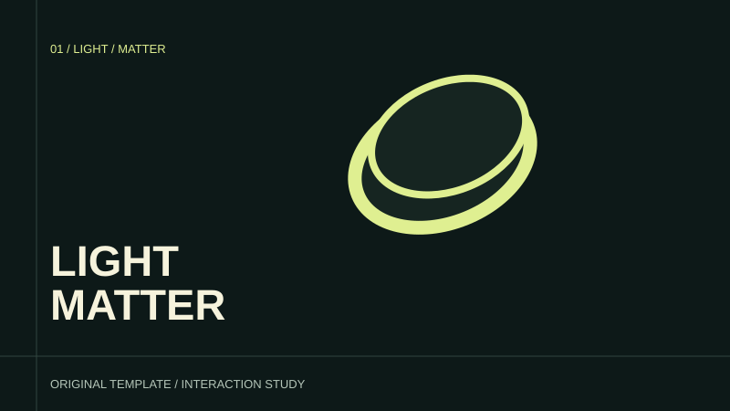

01 / WEBGL
光标巡光 · 材质显影
触发：光标移动调整灯位；滚动改变巡光角度；点击切换表面。
反馈：真实点光源在三维曲面上移动，高光随粗糙度变化，镜头保持稳定。
目的：区分哑光、缎面和抛光的视觉反应。
可直接改用的 Vibe Coding 提示词
制作一个可独立运行的交互页面。目标：区分哑光、缎面和抛光的视觉反应。 触发：光标移动调整灯位；滚动改变巡光角度；点击切换表面。 画面变化：真实点光源在三维曲面上移动，高光随粗糙度变化，镜头保持稳定。 叙事顺序：先看轮廓 → 让光掠过 → 比较表面 → 回到选择。 内容配置放在 ATLAS_MOTION_CONFIG；通过 AtlasTemplate.getState / setState / reset 调用。 滚动可逆、没有强制滚轮劫持；提供章节按钮和键盘可操作的进度条；尊重 prefers-reduced-motion，用静态关键帧代替连续运镜。 验收：三种表面在同一灯位比较；复位后灯位、表面和进度均恢复。 边界：程序化几何与示意灯光，不是实物色差或材质检测。
程序化几何与示意灯光，不是实物色差或材质检测。